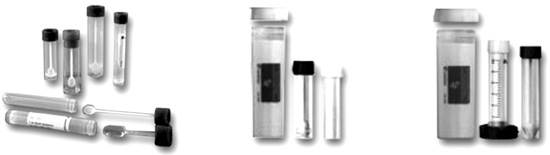

Tubos y contenedores para colección y envío de muestras de heces 

CARACTERÍSTICAS:
Los tubos para heces de PP están disponibles en diámetros de 16.5 a 25 mm y longitudes de 76 a 107 mm. La cucharilla de colección de heces integrada en el tapón de los tubos hace posible que la recogida de muestra se realice de un modo higiénico.
Los recipientes de envío cilíndricos de PP especiales para estos tubos proporcionan una protección excelente contra golpes externos. Cumplen con la normativa europea EN 829 y pueden ser tratados en autoclave. La plantilla absorbente que se encuentra en el recipiente proporciona mayor seguridad en caso de pérdidas en el recipiente primario.
DATOS COMPLEMENTARIOS: Para mayor información comunicarse a:
SARSTEDT MÉXICO S. DE R.L. DE C.V.
Teléfono: (55) 8501-1577
Fax: 8501-1578
e-mail: info.mx@sarstedt.com
y en nuestra página www.sarstedt.com